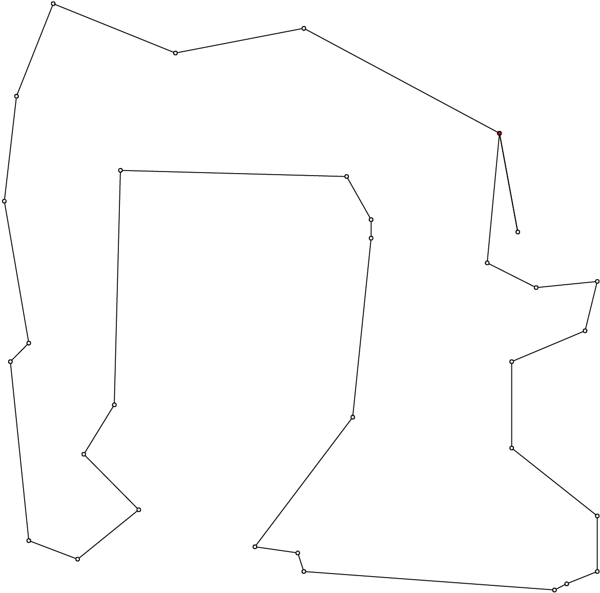
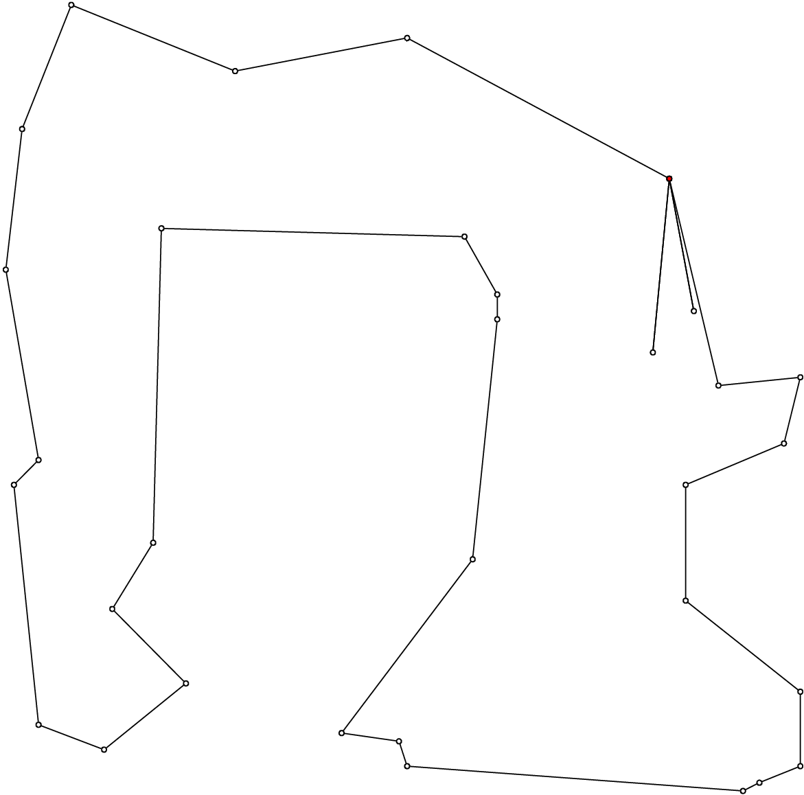
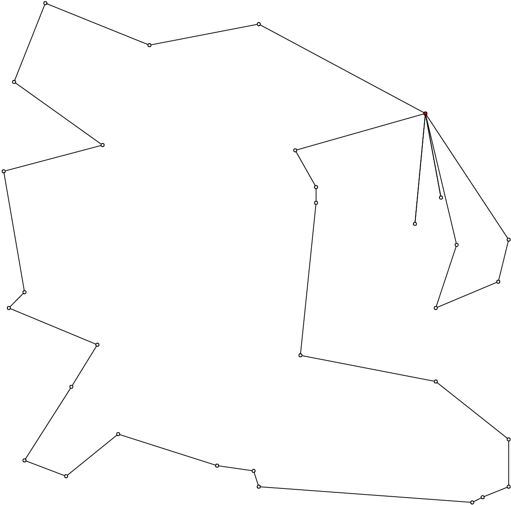
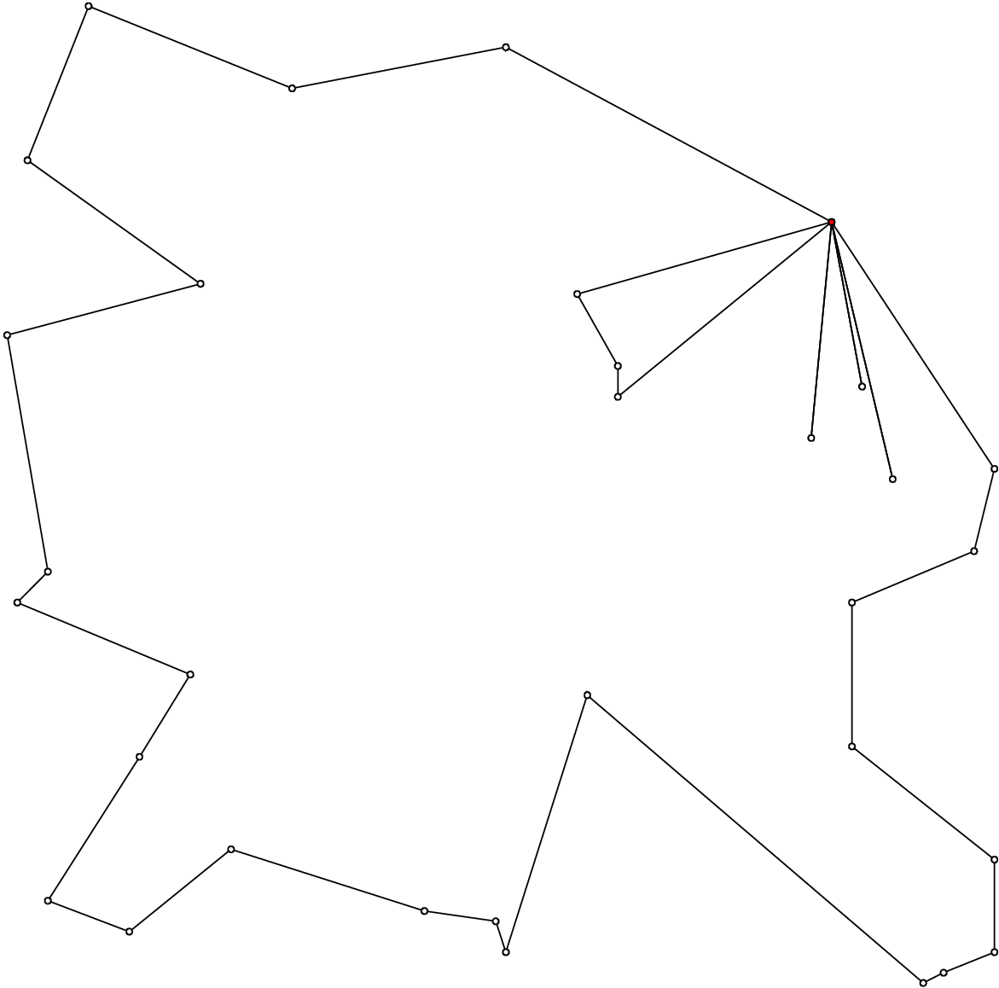

10.2. The VRP in or-tools
In this section, we look at a simple implementation of a program to solve the basic VRP. Particularly of interest is how we force each vehicle to service at least one city and how we traverse a solution of the VRP.
We don’t devise specialized search strategies and use the default strategy.
10.2.1. How to force all vehicles to service cities?
One way to force all vehicles to service at least one city is to forbid each vehicle to return immediately to its ending depot. In this fashion, the vehicle will have to service at least one city. To acheive this, we simply remove the end depots from the domain of the NextVar() variables corresponding to begin depots.
To obtain the NextVar() corresponding to begin depots is easy:
IntVar* const start_var =
routing.NextVar(routing.Start(vehicle_nbr));
To obtain the int64 indices corresponding to end depots is not more complicated. We detail the auxiliary graph in the sub-section The auxiliary graph. The internal numbering of its nodes is done such that all end depots are numbered last, having int64 indices from Size() to Size() + vehicles() non-inclusive where Size() returns the number of NextVar() variables and vehicles() the number of vehicles.
To remove the int64 indices, we need to have a complete model with all variables defined. To complete the model, we must invoke the CloseModel() method:
RoutingModel routing(...);
...
routing.CloseModel();
Now, we can remove the undesired int64 indices:
// Forbidding empty routes
for (int vehicle_nbr = 0; vehicle_nbr < FLAGS_number_vehicles;
++vehicle_nbr) {
IntVar* const start_var =
routing.NextVar(routing.Start(vehicle_nbr));
for (int64 node_index = routing.Size();
node_index < routing.Size() + routing.vehicles();
++node_index) {
start_var->RemoveValue(node_index);
}
}
10.2.2. The basic program
You’ll find the code in the file vrp.cc.
The main method is classic:
int main(int argc, char **argv) {
...
operations_research::TSPLIBReader
tsplib_reader(FLAGS_instance_file);
operations_research::CVRPData cvrp_data(tsplib_reader);
operations_research::VRP_solver(cvrp_data);
return 0;
}
Several flags are defined:
| Flags | Types | Default | Description |
|---|---|---|---|
| instance_file | std::string | “” | Input file with TSPLIB data. |
| depot | int32 | 1 | Depot of the CVRP instance. Must be greater or equal to 1. |
| solution_file | std::string | “” | Output file with generated solution in (C)VRP format. |
| number_vehicles | int32 | 2 | Number of vehicles. |
| time_limit_in_ms | int32 | 0 | Time limit in ms. 0 means no limit. |
The VRPSolver() function is in charge of solving a basic VRP.
void VRPSolver (const CVRPData & data) {
const int size = data.Size();
RoutingModel routing(size, FLAGS_number_vehicles);
routing.SetCost(NewPermanentCallback(&data, &CVRPData::Distance));
if (FLAGS_time_limit_in_ms > 0) {
routing.UpdateTimeLimit(FLAGS_time_limit_in_ms);
}
// Setting depot
CHECK_GT(FLAGS_depot, 0) << " Because we use the"
<< " TSPLIB convention, the depot id must be > 0";
RoutingModel::NodeIndex depot(FLAGS_depot -1);
routing.SetDepot(depot);
routing.CloseModel();
...
We must invoke the CloseModel() to finalize the model for our instance. We need the complete model to be able to interact with it.
We continue the inspection of the VRP_solver() function:
void VRPSolver (const CVRPData & data) {
...
// Forbidding empty routes
// See above.
// SOLVE
const Assignment* solution = routing.Solve();
...
You could inspect the solution as usual, only taking into account that there are more than one vehicle:
if (solution != NULL) {
// Solution cost.
LG << "Obj value: " << solution->ObjectiveValue();
// Inspect solution.
std::string route;
for (int vehicle_nbr = 0; vehicle_nbr < FLAGS_number_vehicles;
++vehicle_nbr) {
route = "";
for (int64 node = routing.Start(vehicle_nbr);
!routing.IsEnd(node);
node = solution->Value(routing.NextVar(node))) {
route = StrCat(route,
StrCat(routing.IndexToNode(node).value() + 1 , " -> "));
}
route = StrCat(route,
routing.IndexToNode(routing.End(vehicle_nbr)).value() + 1 );
LG << "Route #" << vehicle_nbr + 1 << std::endl
<< route << std::endl;
}
} else {
LG << "No solution found.";
}
In VRPSolver(), we prefer to use the CVRPSolution class:
void VRPSolver (const CVRPData & data) {
...
CVRPSolution cvrp_sol(data, &routing, solution);
cvrp_sol.SetName(StrCat("Solution for instance ", data.Name(),
" computed by vrp.cc"));
// test solution
if (!cvrp_sol.IsSolution()) {
LOG(ERROR) << "Solution is NOT feasible!";
} else {
LG << "Solution is feasible and has an obj value of "
<< cvrp_sol.ComputeObjectiveValue();
// SAVE SOLUTION IN CVRP FORMAT
if (FLAGS_solution_file != "") {
cvrp_sol.Write(FLAGS_solution_file);
}
}
}
10.2.3. Some outputs
Let’s see if our trick works. We invoke the vrp program with the flag number_vehicles equal to 2, 3, 4 and 5. For instance:
./vrp -instance_file=A-n32-k5.vrp -number_vehicles=2
-solution_file=A-n32-k5-k2.sol
The solution is:
Route #1: 26 16 12 1 7 13 21 31 19 17 2 3 23 6 14 24 27 29 18 8 28
4 11 9 22 15 10 25 5 20
Route #2: 30
cost 545
There are indeed two routes. Don’t forget that this solution doesn’t contain the depot and that the nodes are numbered from 0 (Remember the numbering_solution_nodes_from_zero flag?).
Here are different outputs obtained with the ePiX library, with number_vehicles equal to 2, 3, 4 and 5:
   Without a specialized search strategy, we obtain solutions that are not very interesting. When we’ll solve real CVRPs, we’ll devise specialized search strategies.
Google or-tools |
User's Manual
Google search
Welcome
Tutorial examples
Current chapter
10. Vehicule Routing Problems with constraints: the capacitated vehicle routing problem
Previous section
10.1. The Vehicle Routing Problem (VRP)
Next section
10.3. The Capacitated Vehicle Routing Problem (CVRP)